扉页
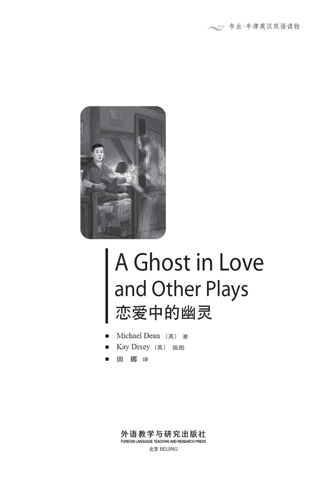
版权页
京权图字：01-2013-7794
Published by arrangement with Oxford University Press for sale in the People's Republic of China only and not for export therefrom. This edition is for sale in the mainland of China only, excluding Hong Kong SAR, Macao SAR and Taiwan.
© Oxford University Press 2008
Oxford is a registered trademark of Oxford University Press
图书在版编目（CIP）数据
恋爱中的幽灵：英汉对照 ／（英）迪安（Dean, M.）著；（英）迪克西（Dixey, K.）绘；田娜译．— 北京：外语教学与研究出版社，2013.12
（书虫·牛津英汉双语读物）
书名原文：A ghost in love and other plays
ISBN 978-7-5135-3931-9
Ⅰ．①恋… Ⅱ．①迪… ②迪… ③田… Ⅲ．①英语－汉语－对照读物②话剧剧本－作品集－英国－现代 Ⅳ．①H319.4：I
中国版本图书馆CIP数据核字（2013）第309211号
出版人 蔡剑峰
责任编辑 徐传斌
封面设计 蔡 颖
出版发行 外语教学与研究出版社
社 址 北京市西三环北路19号（100089）
网 址 http://www.fltrp.com
版 次 2014年1月第1版
书 号 ISBN 978-7-5135-3931-9
制售盗版必究 举报查实奖励
版权保护举报电话：（010）88817519
内容简介
内容简介
大多数人不相信幽灵的存在，直到他们亲眼看到才会相信。在这三个短剧中，理查德、珍妮和布拉德的生活都因为幽灵的出现发生了彻底的变化。
理查德·利特尔见到已故姐夫的幽灵时，又是吃惊又是害怕。他知道自己必须帮助这个幽灵安息，尽管他这样做会令自己置身险境。
珍妮·劳森见到自己亡夫的幽灵时，她明白他有一条特别的信息要传达给她——那是他活着的时候没能告诉她的一些事。
最后，在书名篇短剧中，布拉德·戴维斯遇到了三百年前他曾爱过，而后又抛弃的女孩的幽灵。他将和她厮守让她快乐，还是回到二十世纪的美国？
（书中剧本为非现实题材作品）
A GHOST IN LOVE AND OTHER PLAYS
A GHOST IN LOVE
AND OTHER PLAYS
Most people do not believe in ghosts, until they see one with their own eyes. In these three plays, Richard, Jenny and Brad all have their lives changed completely by the ghosts who appear to them.
Richard Little is surprised and very afraid when he sees the ghost of his dead brother-in-law. He knows that he must help the ghost to find peace, although he himself will be in great danger.
When Jenny Lawson meets the ghost of her dead husband, she understands that he has a special message for her – something that he did not manage to tell her when he was alive.
And finally, in the title play, Brad Davis meets the ghost of the girl he loved and left three hundred years ago. Is he going to stay with her and make her happy, or return to twentieth-century America?
目录
One Ghost for the Day, One Ghost for the Night
One Ghost for the Day,
One Ghost for the Night
INTRODUCTION
Richard Little is at home on a dark night in 1653. Two years ago, his sister Beth's husband, James, died. She found a new husband. But the man at the window in the dark night is James Heston. And he is angry with Richard...
CHARACTERS IN THE PLAY
Richard Little
Mary Little, Richard's wife
The ghost of James Heston, Richard's brother-in-law
David Keech, Beth's second husband
Judge Timms
Oliver Barker, who speaks for Richard in court
Philip Reynolds, who speaks against Richard in court
Six women and six men
PERFORMANCE NOTES
Scene 1: A room with a book, a table, chairs and a dress for Mary to have in her hand.
Scene 2: In court, with the judge's chair, chairs for six men and six women, something to eat, a bag, money.
Scene 3: The same room as Scene 1, with a knife, table and chairs.
Scene 4: In prison, with a bed, table, chair and book.
You will need black clothes for the men, long dresses for the women. The tables and chairs only move in Scenes 1 and 4 in the character's head; they do not move on the stage. In Scene 2 we hear Heston's ghost, but we cannot see him.
SCENE 1
A ghost comes to Richard Little
The year is 1653. It is a cold, dark winter night and Richard Little, a man of forty, is sitting in his chair. He is reading a book. He hears something. He goes to the window, looks out and then goes back to the chair. His wife, Mary, comes in. She is making a dress. She has the dress in her hand.
RICHARD
Mary, I can hear something outside.
MARY
There's nothing there. Read your book, Richard.
RICHARD
Come and sit with me.
MARY
No. I'm making a dress. I'm going upstairs.
RICHARD
Mary, please. There's something out there.
MARY
Oh, Richard!
Mary goes out and James Heston's ghost comes in.
HESTON
Hello, Richard.
RICHARD
Aaaagh! You! James! James Heston! But you – you're dead!
HESTON
Yes. I am dead. But I can't find peace because of you.
RICHARD
Because of me? Why – why because of me?
HESTON
Beth had a new husband after me. That animal, Keech.
RICHARD
Yes. Beth was a good woman. And a good sister to me. I said to her, 'Don't go with Keech. Think of James. He's dead now.'
HESTON
She was Keech's wife for only three months. Then she died. And now Keech has my son. And he has my son's money.
RICHARD
Ah. I understand now.
HESTON
Oh, you remember now? Before I died, I said to you, 'My boy gets my money at twenty-one and not before.' He is eight now, Eight. And Keech has his money.
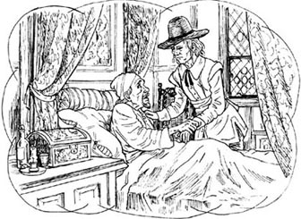
'My boy gets my money at twenty-one and not before.'
RICHARD
I'm sorry about that, but what can I do?
HESTON
You must get my boy's money. Get it from Keech.
RICHARD
No! Keech can kill me with one hand. He's big – he always has a knife in his pocket. Last year he killed a man with that knife. I'm afraid of him, James.
HESTON
Are you afraid of me?
RICHARD
No. Oh! Yes, a little. You're a ghost!
HESTON
Only a little, eh? Look at the table.
RICHARD
(Looking at the table) Oh no! The table is moving! (He stands up and walks to the table.) Oh no! Oh, the chair is moving now! And now my chair is moving! James! Don't do this to me!
HESTON
At this minute, Keech is building a new home in a village near here with my son's money. Stop him!
RICHARD
I'm sorry, James. I can't. (He gets a book and throws it across the room.) I didn't want – that was my hand but – James, can you get in my head? Can you tell my hand--
He looks at his hand and at the book.
HESTON
(Laughing) Yes, Richard. And your answer is going to be 'Yes'. Or you are going to do this again and again and again and--
Richard gets a book and throws it across the room again. Then he runs across the room. Then he moves the table, the chairs and his chair.
Heston laughs. Richard stops.
RICHARD
I'm going mad! Why does my hand throw a book, when I don't want to? Can all dead people do this? Can they get in a man's head, so he moves a chair or throws a book?
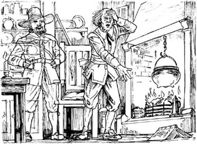
'I'm going mad!'
HESTON
Oh yes. Now, I can do it to you again or you can say 'Yes' and get my son's money. Which?
RICHARD
But how? How can I get the money from Keech?
HESTON
Sit down. I'm going to tell you.
ghost n. the spirit of a dead person that comes back to visit living people 幽灵
peace n. a quiet, happy time; many people hope to find peace after they die 安宁
animal n. someone who behaves in a cruel, violent, or very rude way 衣冠禽兽，残暴的人
throw v. to lift something up and send it quickly through the air 扔
mad adj. of someone who is ill in the head 发疯的
SCENE 2
David Keech in court
In the court we can see Judge Timms, Keech, Barker, Reynolds, Richard and Mary. There are six women and six men behind Keech. They are from the village and they are watching the trial. Judge Timms is in a big chair in front of the court.
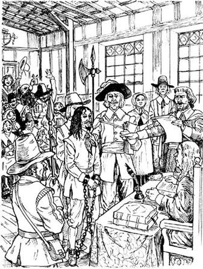
The trial of David Keech.
BARKER
(Standing) My name is Oliver Barker. And I speak for Richard Little here today.
He sits. Reynolds stands up.
REYNOLDS
Judge Timms. I speak for David Keech here today. My name is Philip Reynolds. (He sits.)
WOMAN 1
That Keech took the boy's money. You can see it in his face.
WOMAN 2
Oh Lil, we must listen to Oliver Barker and Philip Reynolds first.
MAN 1
Keech is the boy Tom's father now.
MAN 2
A good father doesn't take his son's money and build a new house with it.
TIMMS
Be quiet in my court!
WOMAN 1
Sorry!
TIMMS
Oliver Barker. You can begin.
BARKER
(Standing) Judge Timms. Before James Heston died, he said this to Richard Little. He said, 'My boy gets my money at twenty-one and not before.'
TIMMS
(Writing) 'At twenty-one and not before...'
BARKER
Yes, judge. But Keech has this money now. The boy's money. He is building a big house with it. We all know that.
MAN 1
(Starting to eat something) Put Keech in prison, I say.
MAN 6
(Eating) Five years.
WOMAN 6
(Eating) No, ten.
TIMMS
You! Don't eat in my court! Philip Reynolds. Speak.
REYNOLDS
(Standing) Judge Timms. Yes, there is a house in a village near here. And, yes, it is Keech's house. But the money for it is not young Tom's money.
TIMMS
(Writing) Not Tom's money.
REYNOLDS
No, Judge Timms. It is David Keech's money.
Reynolds sits.
BARKER
(Standing) So one day Keech is not rich and the next day he is rich? He has money for a house?
Men and women laugh. Barker sits.
REYNOLDS
(Standing) Call David Keech.
Keech stands in front of Judge Timms.
REYNOLDS
David Keech. Where is the boy Tom's money?
Do you have it at home?
KEECH
No.
WOMAN 3
Keech took the money! It was Keech!
WOMAN 6
I said, 'Keech took the money!' I said that yesterday!
KEECH
I have the money here. In this court.
MEN AND WOMEN 1-3
(All talking) No! Never! Keech didn't take the money then! The money's here! Here in this court!
KEECH
The money is under my chair. You! Woman! Bring me the money!
WOMAN 1
Me?
KEECH
Yes, you! (There is a bag under Keech's chair. Woman 1 takes it and gives it to Keech.)
WOMAN 1
Here you are. (She sits down again.)
KEECH
(Opening the bag and taking out money) Here! Judge Timms! Here! Richard Little! Here! Look, everybody! Here is the money! So I didn't take it from the boy! You hear me, Richard Little?
RICHARD
(Afraid) Yes.
TIMMS
One minute! Richard Little.
RICHARD
(Standing, looking afraid) Yes, Judge Timms?
TIMMS
You said, 'Keech took the boy's money'. You said that. Why? Why, man, why? Why say that?
RICHARD
Because – because. Because James Heston came to my home. James Heston said it to me.
MEN AND WOMEN 4-6
(All talking) James Heston? Did he say 'Heston'? Heston's dead. A ghost came?
TIMMS
Richard Little, James Heston is dead. He died in 1651.
MEN AND WOMEN
(All laughing and talking) He talked to a dead man! James Heston! Oh, that's a laugh!
MARY
(Standing) Judge Timms. My husband is ill. In our house he talks to people and there is nobody there. Can I take him home now, please?
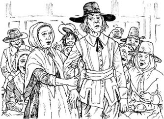
'Can I take him home now, please?'
The men and women are all laughing.
RICHARD
I am not ill! Stop laughing! Be quiet, all of you! Sit down, Mary.
Men and women stop laughing. Mary sits down.
RICHARD
Thank you! (It is quiet in the court now.) Yes. James Heston is dead. And yes, James Heston spoke to me. I want James Heston here. Now. He can tell you.
MAN 4
He is ill!
MAN 5
He's mad!
WOMAN 4
Let's listen to him.
WOMAN 5
Yes, we can listen to him.
TIMMS
Be quiet! Call James Heston! I say, call James Heston to this court!
KEECH
Heston is dead, man! And Richard Little is mad!
TIMMS
Call James Heston!
For a minute, we can hear nothing. Then we hear James Heston's voice, but we cannot see him.
HESTON'S GHOST
I am James Heston.
MEN AND WOMEN
Aaaaaagh! Oh! Oh, but he's dead!
KEECH
No! No! Oh please no!
MEN AND WOMEN
(All talking) It's Heston! Is Heston dead, then? Aaaagh! Oh I'm afraid! Oh please!
TIMMS
James Heston? Is it you? Did you speak to Richard Little?
HESTON'S GHOST
Yes.
TIMMS
What did you say?
HESTON'S GHOST
I told him, Keech took my boy's money. And then Keech killed a man in the next village. He was a rich man. Keech took his money. You see the money now. Here. In this court.
KEECH
Aaagh! I can't kill Heston. Heston is dead. But you! You, Richard Little! You brought me to this court. I'm going to kill you next!
Keech runs out of the court.
TIMMS
Stop him! Stop him!
MEN AND WOMEN
(All talking) It was Keech! Keech took the money! I said that! I said, 'Keech took the money!'
TIMMS
This court says, 'Keech took the money. And Keech killed a man.' Now find David Keech and bring him to me!
court n. a place where judges and lawyers listen to trials 法庭
judge n. the person in a law court who decides how someone will be punished 法官
trial n. a court case, to find out if someone is guilty of a crime or not 审判
prison n. a place where bad people are locked up 监狱
that's a laugh used to say that something is silly or unlikely 简直是笑话〔用于表示某事荒唐或不可能〕
SCENE 3
Keech finds Richard Little
Richard is sitting in his chair, at home.
RICHARD
What's that? Can I hear something? Mary, is that you? Oh no, it's not James again! James, is that you? (He looks at the door, very afraid.) Aaaagh! Oh no!
David Keech comes in. He has a knife.
RICHARD
Oh no! Keech, please! No!
Keech kills Richard, then runs away. Mary comes in and sees Richard.
MARY
Oh no! Not Richard. Not my darling, darling Richard. Keech killed him. You're going to go to prison for this, Keech.
SCENE 4
A visit for Keech in prison
Keech is in prison. He is sitting on his bed. He has a table, a chair and a book there, too.
KEECH
Hello? What's that? Is there someone there? Aaagh! My table! My table is moving. (He stands.) Aaagh! Now the bed's moving. Am I ill? Oh my head! (He puts his head in his hands.) Oh! Now the chair is moving. What's happening? (He takes the book and throws it across the room.) Why did I do that? Am I mad? It was my hand but--
The ghost of Richard comes in.
KEECH
Aaaaghh! You're dead! I killed you!
RICHARD
Yes. I'm dead. And you killed me. But I'm not going away. I'm staying here, in prison with you.
Keech wants to hit Richard's ghost, but he cannot. Richard laughs.
RICHARD
You can't hit me now. You can't hit a ghost. And you can't kill me again. But we can talk. We have time for that. We have all day.
Keech throws a book across the room.
RICHARD
And you can do that all day too.
KEECH
All day? All the time?
RICHARD
Yes. (He lies on the bed.) Now throw the book across the room again. (Keech does it.) And again and again and again.
KEECH
(Throwing the book again and again) Oh no! Please! Are all my days going to be like this?
RICHARD
Your days, yes. And for your nights – I have a friend here.
James Heston's ghost comes in.
HESTON
Hello, Richard. Hello, David.
KEECH
You! You here too!
HESTON
(Smiling) Yes, David, throw the book across the room, please. (Keech does it.) Thank you. I'm going to be here at night, David. And you have Richard here every day. All right?
KEECH
Oh no! No!
HESTON
One ghost for the day, one ghost for the night. Now throw the book across the room again.
Keech does it. Richard and Heston laugh.
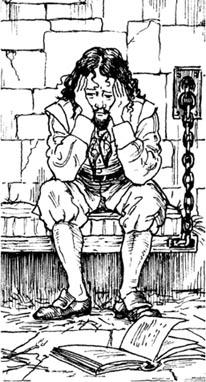
darling n. a way of speaking to someone we love 亲爱的
visit n. an occasion when someone goes to spend time in a place or goes to see a person 拜访
一个幽灵负责白天，一个幽灵负责晚上
一个幽灵负责白天，
一个幽灵负责晚上
内容简介
1653年一个漆黑的夜晚，理查德·利特尔待在家中。他姐姐贝丝的丈夫詹姆斯在两年前去世了。她又嫁了一个丈夫。然而窗外黑夜中的那个人就是詹姆斯·赫斯顿，他对理查德火冒三丈……
剧中人物
理查德·利特尔
玛丽·利特尔——理查德的妻子
幽灵詹姆斯·赫斯顿——理查德的姐夫
戴维·基奇——贝丝的第二任丈夫
蒂姆斯法官
奥利弗·巴克——法庭上代表原告理查德
菲利普·雷诺兹——法庭上代表被告
六个女人和六个男人
场景说明
第一场：一个房间里，有一本书、一张桌子、一些椅子和一条裙子，玛丽将裙子拿在手中。
第二场：法庭上，法官的椅子、六个男人和六个女人坐的椅子、一些吃的东西、一个袋子和钱。
第三场：同第一场中的房间里，有一把刀、一张桌子和一些椅子。
第四场：狱中，有一张床、一张桌子、一把椅子和一本书。
要为男人准备黑色的衣服，为女人准备长裙。第一场和第四场中的桌椅只在演员的想象中移动，在舞台上不用真的移动。在第二场中，我们能听到赫斯顿的幽灵说话，但是看不到他。
第一场
理查德·利特尔遇鬼
1653年。一个寒冷漆黑的冬夜，年约四十的理查德·利特尔坐在椅子上读书。他听到了什么动静，于是走到窗前，向外看去，然后回到椅子上。他的妻子玛丽走了进来。玛丽正在做裙子，手中捧着那条裙子。
理查德：
玛丽，我听到外面有什么动静。
玛丽：
什么都没有。读你的书吧，理查德。
理查德：
来坐我身边吧。
玛丽：
不行，我正在做裙子呢。我要上楼去了。
理查德：
玛丽，求你了。外面有动静。
玛丽：
唉，理查德！
玛丽下场，詹姆斯·赫斯顿的幽灵上场。
赫斯顿：
你好，理查德。
理查德：
啊！是你！詹姆斯！詹姆斯·赫斯顿！可是你——你已经死了呀！
赫斯顿：
我是死了。可就是因为你，我不得安宁。
理查德：
因为我？为什么——为什么是因为我呢？
赫斯顿：
我死之后，贝丝又嫁了一个丈夫。那个禽兽——基奇。
理查德：
是的。贝丝是个好女人，也是我的好姐姐。我当时跟她说：“别跟基奇走。想想詹姆斯吧，他刚死呀。”
赫斯顿：
她嫁给基奇才三个月就死了。现在基奇霸占了我的儿子，而且还霸占了我儿子的财产。
理查德：
啊，我现在明白了。
赫斯顿：
啊，你现在想起来了？我死之前曾对你说：“我儿子到21岁才能继承我的财产。”他现在才8岁，8岁呀。基奇就霸占了他的财产。
理查德：
听到这事我很难过，可是我能做什么呢？
赫斯顿：
你必须拿到我儿子的财产，从基奇那里拿回来。
理查德：
不！基奇一只手就能要了我的命。他是个大块头——他兜里总是装着刀。去年，他就是用那把刀杀了一个人。我害怕他呀，詹姆斯。
赫斯顿：
你害怕我吗？
理查德：
不。啊，是的，有一点儿怕。你是个幽灵呀！
赫斯顿：
只是有一点儿吗？嗯？看那张桌子。
理查德：
（盯着那张桌子）啊呀！桌子动了！（他站起身来，走到桌旁。）啊呀！啊，现在椅子也动了！现在我的椅子也在动！詹姆斯！别这样对我！
赫斯顿：
这会儿基奇正在附近的一个村子里盖新房，用的就是我儿子的钱。去阻止他！
理查德：
很抱歉，詹姆斯，我不能。（他拿起一本书朝房间的另一头扔去。）我不想——那是我的手，不过——詹姆斯，你能钻进我的脑袋里吗？你能让我的手——
他看着自己的手和那本书。
赫斯顿：
（哈哈大笑）是的，理查德。你的答案必须是“可以”。不然你就会一遍一遍又一遍地这么做——
理查德拿过一本书又朝房间的另一头扔去，接着他跑到房间的另一头，移动桌子，移动椅子，又移动他自己的那把椅子。
赫斯顿哈哈大笑。理查德停了下来。
理查德：
我要发疯了！为什么我本来不想，我的手却去扔书呢？所有的死人都能这么做吗？他们能钻进人的脑袋里，让人移动椅子和扔书吗？
赫斯顿：
哦，那当然了。现在，我可以再对你做一次，或者你就回答“可以”，然后去夺回我儿子的财产。你选哪个？
理查德：
可是我该怎么做呢？我怎么才能把钱从基奇那里夺回来呢？
赫斯顿：
坐下，我来告诉你。
第二场
戴维·基奇出庭
法庭上有蒂姆斯法官、基奇、巴克、雷诺兹、理查德和玛丽。基奇身后有六女六男，他们是来观看庭审的村民。蒂姆斯法官在法庭正前方，坐在一把大椅子上。
巴克：
（站起来）我叫奥利弗·巴克，今天代表理查德·利特尔。
巴克坐下。雷诺兹起身。
雷诺兹：
蒂姆斯法官，我今天代表戴维·基奇。我叫菲利普·雷诺兹。（雷诺兹坐下。）。
村妇甲：
那个基奇霸占了那孩子的财产，从他脸上就能看出来。
村妇乙：
喂，利尔，我们得先听听奥利弗·巴克和菲利普·雷诺兹怎么说。
村夫甲：
基奇现在是汤姆那孩子的父亲。
村夫乙：
一个好父亲是不会拿儿子的钱去盖新房的。
蒂姆斯：
保持法庭肃静！
村妇甲：
对不起！
蒂姆斯：
奥利弗·巴克，你可以发言了。
巴克：
（站起来）蒂姆斯法官，詹姆斯·赫斯顿死前曾对理查德·利特尔说了如下的话，他说：“我儿子到21岁才能继承我的财产。”
蒂姆斯：
（记录）“到21岁才能继承……”
巴克：
是的，法官。可基奇现在占有了这些财产——那孩子的财产。他正用这笔钱盖一座大房子，这我们都知道。
村夫甲：
（开始吃东西）我说，把基奇扔到监狱里去。
村夫己：
（吃东西）关上5年。
村妇己：
（吃东西）不，关上10年。
蒂姆斯：
你们别在法庭上吃东西！菲利普·雷诺兹，你说吧。
雷诺兹：
（站起来）蒂姆斯法官。是的，这附近一个村子里有一栋房子。不错，那房子是基奇的，可是盖房子用的不是小汤姆的钱。
蒂姆斯：
（记录）不是汤姆的钱。
雷诺兹：
是的，蒂姆斯法官。用的是戴维·基奇自己的钱。
雷诺兹坐下。
巴克：
（站起来）那么前一天基奇还没钱呢，第二天他就成富人了？他有钱盖房子吗？
村民们笑了起来。巴克坐下。
雷诺兹：
（站起来）传戴维·基奇。
基奇站到蒂姆斯法官面前。
雷诺兹：
戴维·基奇，那个叫汤姆的孩子的钱哪儿去了？在你家里吗？
基奇：
不在。
村妇丙：
基奇把钱拿走了！就是基奇！
村妇己：
我说过：“基奇把钱拿走了！”我昨天就说了！
基奇：
我把钱放这儿了，在这个法庭上。
村夫甲乙丙和村妇甲乙丙：
（交头接耳）不！不可能！这么说基奇没有拿那些钱！钱都在这儿！在法庭上！
基奇：
钱就在我的座椅下面。你！那个女人！把钱给我拿过来！
村妇甲：
我？
基奇：
是的，就是你！（基奇的座椅下面有个袋子。村妇甲把袋子取出来，交给了基奇。）
村妇甲：
给你。（她又回到座位上。）
基奇：
（打开袋子，拿出钱来）在这儿！蒂姆斯法官！在这儿！理查德·利特尔！在这儿！大家都看看啊！钱在这儿！我没有拿那孩子的钱！你听到我的话了吗，理查德·利特尔？
理查德：
（战战兢兢的）是的。
蒂姆斯：
等一下，理查德·利特尔。
理查德：
（站起来，表情战战兢兢的）什么事，蒂姆斯法官？
蒂姆斯：
你说：“基奇霸占了那孩子的财产。”你说过这话，为什么？为什么呢，伙计，为什么？为什么那么说？
理查德：
因为……因为……因为詹姆斯·赫斯顿来我家找我了，是詹姆斯·赫斯顿告诉我的。
村夫丁戊己和村妇丁戊己：
（交头接耳）詹姆斯·赫斯顿？他是说“赫斯顿”吗？可是赫斯顿已经死了呀。幽灵现身？
蒂姆斯：
理查德·利特尔，詹姆斯·赫斯顿已经死了。他1651年就死了。
村民们：
（全都哈哈大笑，交头接耳）他跟死人聊天！詹姆斯·赫斯顿！啊，简直是笑话！
玛丽：
（站起来）蒂姆斯法官，我丈夫病了。在我们家里，他跟空气说话。我现在能带他回家吗？求您了！
村民们全都哈哈大笑。
理查德：
我没病！别笑了！你们全都安静！坐下，玛丽。
村民们止住笑声。玛丽坐下。
理查德：
谢谢你们！（现在法庭安静下来。）是的，詹姆斯·赫斯顿已经死了。可詹姆斯·赫斯顿的确跟我说话了，我想让詹姆斯·赫斯顿到这儿来，就现在，让他来告诉你们。
村夫丁：
他真是病了！
村夫戊：
他疯了！
村妇丁：
咱们听他说吧。
村妇戊：
是的，咱们听他说说看。
蒂姆斯：
肃静！传詹姆斯·赫斯顿！听着，传詹姆斯·赫斯顿到庭！
基奇：
嘿，赫斯顿死了！理查德·利特尔疯了！
蒂姆斯：
传詹姆斯·赫斯顿！
有那么一会儿，观众什么也没听到。后来，观众听到詹姆斯·赫斯顿的声音，但看不到他。
赫斯顿的幽灵：
我是詹姆斯·赫斯顿。
村民们：
啊！啊呀！可他已经死了呀！
基奇：
不！不！不要啊！
村民们：
（交头接耳）是赫斯顿！那么赫斯顿真的死了吗？啊！我好害怕！天哪！
蒂姆斯：
詹姆斯·赫斯顿？是你吗？你曾经跟理查德·利特尔讲过话吗？
赫斯顿的幽灵：
是的。
蒂姆斯：
你当时怎么说的？
赫斯顿的幽灵：
我告诉他基奇霸占了我儿子的财产。后来基奇杀了邻村一个人，那是个富人，基奇抢走了他的钱。你现在可以看到那人的钱，就在这儿，在法庭上。
基奇：
啊！我杀不了赫斯顿，因为他已经死了。可是你！你，理查德·利特尔！是你把我弄到这法庭上来的，我接下来就要杀掉你！
基奇跑出了法庭。
蒂姆斯：
拦住他！拦住他！
村民们：
（交头接耳）就是基奇！是基奇拿走了那些钱！我说过的！我说过：“基奇拿走了那些钱！”
蒂姆斯：
本法庭判定：“基奇霸占了财产，并杀了一个人。”现在去找戴维·基奇，把他带来见我！
第三场
基奇找到了理查德·利特尔
理查德待在家里，坐在椅子上。
理查德：
那是什么声音？我是听到什么了吗？玛丽，是你吗？啊呀，不会又是詹姆斯吧！詹姆斯，是你吗？（他看着大门，害怕极了。）
啊！啊呀！
戴维·基奇闯了进来，他拿着一把刀。
理查德：
不！基奇，求你了！不要啊！
基奇杀死了理查德后便逃跑了。玛丽进来看到了理查德。
玛丽：
天哪！不！不是理查德吧。不会是我最最亲爱的理查德吧。基奇杀了他。基奇，你将为此进大牢！
第四场
狱中探访基奇
基奇在狱中。他坐在床上，牢房里有一张桌子和一把椅子，还有一本书。
基奇：
有人吗？那是什么？有人在那儿吗？啊！我的桌子！我的桌子动了。（他站了起来。）啊！现在床也动了。我病了吗？啊！我的脑袋！（他用双手抱住头。）啊！现在椅子也动了。怎么回事？（他拿起书，扔到牢房的另一头。）我为什么那么做？我疯了吗？这是我的手，可是——
理查德的幽灵上场。
基奇：
啊！你已经死了！我杀了你！
理查德：
是的，我已经死了，是你杀了我。可我不打算离开，我就待在这儿，和你一同待在监狱里。
基奇想要打理查德的幽灵，可他打不着。理查德笑了起来。
理查德：
你现在打不了我了。你打不了幽灵，你也不能再杀我一次。不过我们可以聊聊，我们有的是时间，我们整个白天都可以聊天。
基奇把一本书扔到牢房的另一头。
理查德：
而且你也可以整个白天都干这个。
基奇：
整个白天？一刻不停？
理查德：
是的。（他躺在床上。）现在再把书扔到牢房的另一头。（基奇照做了。）再扔一次再扔一次再扔一次。
基奇：
（一次又一次不停地扔书）啊不！求你了！我以后每个白天都会像这样吗？
理查德：
是的，你每个白天都是这样。至于你晚上的时间——我这儿还有个朋友。
詹姆斯·赫斯顿的幽灵上场。
赫斯顿：
你好，理查德。你好，戴维。
基奇：
是你！你也来这儿了！
赫斯顿：
（微笑着）是的。戴维，请把书扔到牢房的另一头。（基奇照做了。）谢谢。我以后晚上就会到这里来，戴维，而每个白天都有理查德在这儿，怎么样？
基奇：
啊不！不！
赫斯顿：
一个幽灵负责白天，一个幽灵负责晚上。嗳，再把书扔到牢房的另一头去。
基奇照做了。理查德和赫斯顿哈哈大笑。
Sleep Now, My Darling
Sleep Now, My Darling
INTRODUCTION
Jenny Lawson was an actress and her husband Gilbert is a film director. Now Jenny stays at home, in their nice house, but she wants more. She wants to live a little before she dies! Gilbert loves Jenny, but a wife must stay at home, he thinks. Suddenly something happens to Gilbert, and then he understands Jenny. But is it too late?
CHARACTERS IN THE PLAY
Jenny Lawson, a film actress
Gilbert Lawson, Jenny's husband, a film director
Henry, a young man, a film student
Laura, a friend of Jenny's from school
Jenny's father
Jenny's mother
A waitress at the airport café
Two women and one man at the airport
British Airways man at the airport check-in desk
PERFORMANCE NOTES
Scene 1: In a garden with a table, two chairs, breakfast (with bread), a book.
Scene 2: At the airport café, with a table, two chairs, a big bag, a coffee, a coke, a sandwich.
Scene 3: A check-in desk, some plane tickets.
Scene 4: A room with a table, three chairs, a telephone.
Jenny must have a watch.
SCENE 1
Jenny must stay at home
It is a hot summer day. Jenny and Gilbert Lawson are having breakfast at a table in their garden. Gilbert is reading a book.
JENNY
Gilbert, can I come with you? To America?
GILBERT
(He is reading. Looking up) What?
JENNY
Oh, Gilbert! Please listen to me! I said 'Can I come to America too?'
GILBERT
(Eating some bread) Mmmm. This is good bread. Did you make it?
JENNY
Yes. Gilbert! I said, 'Can I come with you?'
GILBERT
No, Jenny. You have work here. There's the house, the garden...
He begins to read his book again.
JENNY
I remember My New Friend. It was your best film. It was my best film, too! They were happy days.
GILBERT
(He puts the book down, smiling.) Yes. I watched My New Friend again last week. It's the best Gilbert Lawson film. And you were good in it, my love! You're a good actress.
JENNY
(Smiling) The film had a good director! Gilbert Lawson!
GILBERT
Oh, thank you! But now I have this new film, so I must go to America for six weeks.
JENNY
Gilbert, can I be in this film, too? I want to be an actress again.
GILBERT
Perhaps next time. Would you like that? Perhaps you can be in the next film.
JENNY
You said that before.
GILBERT
Did I? (Eating again) Yes, this bread is very good.

'Yes, this bread is very good.'
JENNY
Can we go to America together then? Not for a film. Just you and me. Perhaps next year?
GILBERT
Perhaps. (He smiles at her.)
JENNY
(Smiling at him) Next year, then.
GILBERT
Yes. Next year. Love, I must go now. I'm going to be late for the plane. I love you, Jenny.
JENNY
(Unhappily) I love you, too, darling.
film n. a moving picture that you see at the cinema or on television 电影
actress n. a girl or woman who acts in plays or films 女演员
director n. the person who tells actors and actresses how to act their parts or say their words 导演
SCENE 2
Jenny talks to a film student
It is six weeks later. Jenny is having a coffee at the airport. She is waiting for Gilbert's plane. A young man, Henry, sees her. Henry has a big bag in his hand.
HENRY
Hello! Are you Jenny Lawson?
JENNY
Yes.
HENRY
I knew it!
A young waitress brings Jenny's coffee. She smiles at Henry.
WAITRESS
(To Jenny) Here you are. (To Henry) And do you want something?
JENNY
(To the waitress) Thanks. (To Henry) Sorry, but do I know you?
HENRY
(To the waitress) A coke for me please, and a sandwich.
WAITRESS
(She smiles at Henry.) One coke, one sandwich.
(She goes away.)
HENRY
(To Jenny) Oh sorry – yes. I know your film, My New Friend. And I know Gilbert. Can I sit down?
JENNY
(Smiling) You can't stand up and have a coke and a sandwich. Wait a minute. I know you. I know your face. But I can't remember – tell me, how do you know Gilbert?
Henry sits down at the table with Jenny.
HENRY
I'm learning about his work. I know all the Gilbert Lawson films. But forget about me. I want to talk about you. You aren't happy. I can see that.
JENNY
(Angrily) What? You can't say that!
The waitress comes back with a coke and a sandwich.
WAITRESS
(She puts the things down and smiles at Henry.) A coke and a sandwich.
HENRY
Thank you.
WAITRESS
That's OK. The sandwiches are very good. I have them for lunch sometimes.
HENRY
(Smiling and eating the sandwich) Yes, you're right. It's very good. Thank you.
WAITRESS
That's OK. Goodbye then. (She goes.)
JENNY
(Looking at her watch) I must go soon.
HENRY
What do you do every day?
JENNY
What? I don't know you. You can't ask--
HENRY
(Smiling) Jenny. Please. Tell me. What do you do every day?
Jenny begins to cry. Henry smiles, but nicely.
JENNY
(Crying, angry) OK. Here's your answer. I get up in the morning and then I do nothing. We have no children. A woman does the house for me. A man does the garden.
HENRY
Do you have friends?
JENNY
(Crying) Yes! No! I have coffee with people. I have dinner with people. We say things like, 'Nice weather for the time of year'. But we don't talk.
HENRY
Yes. I understand. Now I'm going to tell you about me. I'm twenty. I go to America, sometimes. I have friends. I like films, so I make films. I'm happy. What about you?
JENNY
(She stops crying.) I was happy when I was an actress.
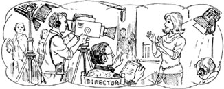
'I was happy when I was an actress.'
HENRY
There! There's your answer! Be an actress again.
Laura comes in. She sees Jenny.
LAURA
Jenny Lawson!
JENNY
Laura!
LAURA
What are you doing here?
JENNY
Waiting for Gilbert.
LAURA
(Smiling at Henry) And who is this?
HENRY
My name is Henry. I'm a film student.
JENNY
Sit down, Laura, please.
LAURA
No. I can't stop. My children are here. We are all going to America. All the family. I write books now, you know. What do you do?
JENNY
Me? Nothing.
LAURA
Have you got children?
JENNY
No.
LAURA
You look unhappy, Jenny. At school you were beautiful and good at everything. And now you are older, with no work and no children. Oh dear!
JENNY
What? Laura! Why did you say that?
Laura goes. Jenny is very unhappy.
HENRY
I have to go now. (He picks up his bag.)
JENNY
What's – what's that name on your bag? (Reading the name) Henry Gilbert Lawson. I know you now! Gilbert! You are Gilbert, when he was twenty years old. But – why are you here? Oh no! Aaaaggghhh!
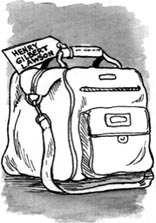
Henry runs out.
waitress n. a girl or woman who brings food and drinks to your table in a restaurant or café 女服务员
unhappy adj. sad, not happy 不高兴的
SCENE 3
Jenny learns about Gilbert
There are four people at the check-in, Woman 1, Woman 2, a man and Jenny's father. They are waiting. A British Airways man is looking at Father's plane ticket. Jenny runs in.
JENNY
Excuse me! Oh, father! What are you doing here?
FATHER
Jenny, smile. Be happy.
JENNY
What?
WOMAN 1
(To Jenny) Hey! I was here before you.
MAN
(To Jenny) I was in front of you, too.
WOMAN 2
(To Jenny) Are you OK, love? (To Woman 1 and man) She's white in the face!
JENNY
(To the British Airways man) Excuse me...
BRITISH AIRWAYS MAN
(Looking at tickets) Can you wait, please?
JENNY
No! My name is Jenny Lawson...
BRITISH AIRWAYS MAN
Ah! Mrs Lawson! We phoned you at home. There was no answer. Mrs Lawson, I'm sorry, but Mr Lawson's plane crashed in the sea. He's dead.
JENNY
Oh no!!!
crash v. (of a plane) to hit the ground and be badly damaged 坠毁
SCENE 4
Jenny understands everything
Jenny's father and mother and Jenny are all sitting at a table.
JENNY
They all died. All the people on the plane.
MOTHER
Oh Jenny!
FATHER
Your mother and I are so sorry, my love.
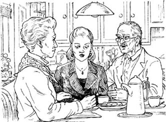
'Your mother and I are so sorry.'
JENNY
Thank you. Why were you at the airport, father?
FATHER
Me? I wasn't at the airport.
JENNY
Yes, you were! You were at the British Airways check-in desk. You said, 'Be happy.' Then you left.
FATHER
No!
JENNY
Wait a minute. (Telephoning) Hello, Laura? Laura, this is Jenny Lawson. We were at school together, Laura, I saw you at the airport, remember, and – oh!
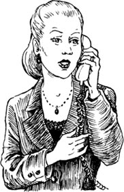
'Laura, this is Jenny Lawson.'
MOTHER
What is Laura saying?
JENNY
She said, 'I wasn't at the airport.' (Into the telephone) Laura, one question. Do you write books now? Yes. Thank you. (Putting the phone down, and speaking to her father and mother) She writes books.
MOTHER
Is that important?
JENNY
Yes. Laura wants to write books, so she writes books. And she's happy. At the airport, father said 'Be happy.' And Henry Gilbert Lawson said 'Be an actress again.'
MOTHER
I understand.
JENNY
I understand now, too. My darling husband, I'm going to be an actress for you, again. A good actress. Thank you. So sleep now, my darling.
check-in desk n. the place at the airport where you show your ticket and hand over your luggage 登机手续办理处
安息吧，亲爱的
安息吧，亲爱的
内容简介
珍妮·劳森是一名演员，她的丈夫吉尔伯特是一名电影导演。现在珍妮就待在他们漂亮舒适的家里，可她想要的不止这些。她想在有生之年活得更精彩一点儿！吉尔伯特爱珍妮，可他觉得妻子必须待在家里。吉尔伯特突然出了意外，却由此理解了珍妮。然而一切会不会太晚了呢？
剧中人物
珍妮·劳森——电影演员
吉尔伯特·劳森——珍妮的丈夫，电影导演
亨利——年轻人，电影学院的学生
劳拉——珍妮上学时的朋友
珍妮的父亲
珍妮的母亲
机场咖啡厅的女服务员
机场里的两个女人和一个男人
登机手续办理处的英国航空公司工作人员
场景说明
第一场：花园里，有一张桌子、两把椅子、早餐（有面包）和一本书。
第二场：机场咖啡厅里，有一张桌子、两把椅子、一个大旅行包、一杯咖啡、一杯可乐和一个三明治。
第三场：办理登机手续的柜台，有一些机票。
第四场：一个房间里，有一张桌子、三把椅子和一部电话机。
珍妮须佩戴手表。
第一场
珍妮必须待在家里
夏日里炎热的一天。珍妮和吉尔伯特·劳森正坐在花园里的桌子旁吃早餐。吉尔伯特正在读书。
珍妮：
吉尔伯特，我能和你一起去吗？去美国？
吉尔伯特：
（正在读书，抬起头来）什么？
珍妮：
喂，吉尔伯特！请听我说！我说：“我也去美国可以吗？”
吉尔伯特：
（吃着面包）嗯，这面包不错，是你做的吗？
珍妮：
是的。吉尔伯特！我问：“我能跟你一起去吗？”
吉尔伯特：
不行，珍妮。你在这儿有工作要做。这栋房子，这个花园……
他又读起书来。
珍妮：
我想起了《我的新朋友》。那是你最好的影片，那也是我最好的影片！那时候多开心呀！
吉尔伯特：
（放下书，微笑着。）是呀，上周我又看了一遍《我的新朋友》，那是吉尔伯特·劳森最好的电影。你演得也很棒，亲爱的！你是个出色的演员。
珍妮：
（微笑着）那部电影有个出色的导演！就是吉尔伯特·劳森！
吉尔伯特：
啊，谢谢！可我现在要拍这部新影片，所以必须去美国六个星期。
珍妮：
吉尔伯特，我也能参演这部影片吗？我还想当演员。
吉尔伯特：
下一次吧，好吗？也许你可以参演下一部影片。
珍妮：
你以前说过这话。
吉尔伯特：
是吗？（又吃了起来）不错，这个面包非常好吃。
珍妮：
那我们可以一起去美国吗？不是为了拍电影，只有你和我。明年怎么样？
吉尔伯特：
或许可以吧。（他朝她微笑。）
珍妮：
（朝他微笑）那就明年吧。
吉尔伯特：
好吧，明年。亲爱的，我现在得走了，要不就赶不上飞机了。我爱你，珍妮。
珍妮：
（不高兴地）我也爱你，亲爱的。
第二场
珍妮与一名电影学院学生的谈话
六周之后。珍妮在机场喝咖啡，等待吉尔伯特的航班。一个名叫亨利的年轻人看到了她，亨利手里拎着一个大旅行包。
亨利：
您好！您是珍妮·劳森吗？
珍妮：
是的。
亨利：
我就知道！
一名年轻的女服务员端来了珍妮要的咖啡，她朝亨利笑了笑。
女服务员：
（对珍妮）给您。（对亨利）您想来点儿什么？
珍妮：
（对女服务员）谢谢。（对亨利）不好意思，我们认识吗？
亨利：
（对女服务员）请给我来一杯可乐和一个三明治。
女服务员：
（朝亨利微笑。）一杯可乐，一个三明治。（下场。）
亨利：
（对珍妮）啊，抱歉——是这样的，我看过你的电影《我的新朋友》，我也认识吉尔伯特。我能坐下吗？
珍妮：
（微笑着）你不能站着喝可乐，吃三明治呀。等一下，我认出你了，我见过你。可我想不起来在何时何地——告诉我，你是怎么认识吉尔伯特的？
亨利在珍妮的桌边坐下。
亨利：
我正在研究他的作品，我了解吉尔伯特·劳森所有的电影。不过别说我了，我想聊聊你。你不开心，我能看得出来。
珍妮：
（生气地）什么？你不能那么说！
女服务员回到场上，端来了一杯可乐和一个三明治。
女服务员：
（放下手里的东西，冲着亨利微笑。）一杯可乐，一个三明治。
亨利：
谢谢。
女服务员：
别客气。三明治非常可口，我有时午餐就吃它。
亨利：
（微笑着吃起三明治来）是的，你说的没错，非常美味。谢谢。
女服务员：
别客气，那么请慢用。（下场。）
珍妮：
（看着手表）我得赶紧走了。
亨利：
你每天都干些什么？
珍妮：
什么？我不认识你，你不能问——
亨利：
（微笑着）珍妮，请告诉我吧，你每天都干些什么？
珍妮哭了起来。亨利友善地微笑着。
珍妮：
（哭着，怒气冲冲地）好吧，我告诉你答案。我早晨起床，之后就无所事事。我们没有孩子。家里请了一个女人为我收拾房间，一个男人打理花园。
亨利：
你有朋友吗？
珍妮：
（哭着）有！没有！我和别人一起喝咖啡，一起吃饭，我们通常说些“对于这个时节来说，今天的天气真不错”之类的话，可我们不谈心。
亨利：
好的，我明白了。现在我要跟你谈谈我自己。我二十岁，有时候去美国，我有一些朋友，我喜欢电影，所以我拍电影。我很快乐，你呢？
珍妮：
（止住了哭声。）我拍戏的时候很快乐。
亨利：
这就对了！这就是你的答案！继续去做演员吧。
劳拉上场，她看到了珍妮。
劳拉：
珍妮·劳森！
珍妮：
劳拉！
劳拉：
你在这儿干什么呢？
珍妮：
等吉尔伯特。
劳拉：
（朝亨利微笑）这位是？
亨利：
我叫亨利，我是电影学院的学生。
珍妮：
请坐，劳拉。
劳拉：
不了，我还有事。我的孩子们在这儿，我们全家人都要去美国。你知道吗？我现在会写写书，你呢？
珍妮：
我？什么都不干。
劳拉：
有孩子了吗？
珍妮：
没有。
劳拉：
你看起来不太开心，珍妮。在学校的时候，你漂亮，且样样出色。可现在你不年轻了，既没有工作也没有孩子。天哪！
珍妮：
什么？劳拉！你为什么那么说？
劳拉下场。珍妮非常不开心。
亨利：
我现在得走了。（他提起了自己的旅行包。）
珍妮：
你——你包上的名字是什么？（读那个名字）亨利·吉尔伯特·劳森。我现在知道你是谁了！吉尔伯特！你是二十岁时的吉尔伯特。可是——为什么你会在这里呢？啊不！啊！
亨利跑了出去。
第三场
珍妮获悉吉尔伯特的消息
登机手续办理处有四个人：甲女、乙女、一个男人和珍妮的父亲。他们正在等候。一名英国航空公司的工作人员正在检查珍妮父亲的机票。珍妮跑了进来。
珍妮：
打扰一下！啊，爸爸！您在这儿干什么呢？
珍妮父亲：
珍妮，笑一笑吧，开心点。
珍妮：
什么？
甲女：
（对珍妮说）喂！我排在你前面。
男人：
（对珍妮说）我也在你前面。
乙女：
（对珍妮说）你没事吧，亲爱的？（对甲女和男人说）她脸都青了！
珍妮：
（对英国航空公司的工作人员说）打扰了……
英国航空公司的工作人员：
（看着机票）请您等一下，好吗？
珍妮：
不行！我叫珍妮·劳森……
英国航空公司的工作人员：
啊！劳森夫人！我们给你家打电话了，没人接。劳森夫人，我很抱歉，劳森先生乘坐的飞机在海上坠毁了。他去世了。
珍妮：
啊！不！
第四场
珍妮明白了一切
珍妮的父母和珍妮都坐在桌边。
珍妮：
他们都死了，飞机上所有的人。
珍妮母亲：
啊，珍妮！
珍妮父亲：
你母亲和我都很难过，亲爱的。
珍妮：
谢谢。爸爸，你当时怎么会在机场呢？
珍妮父亲：
我？我当时没在机场呀。
珍妮：
不，你在！你在英国航空公司登机手续办理处。你当时对我说：“开心点。”说完就走了。
珍妮父亲：
没有！
珍妮：
等一下。（拨打电话）你好，是劳拉吗？劳拉，我是珍妮·劳森。我们以前在同一所学校念书。劳拉，我在机场见到了你，你记得吗？而且——啊！
珍妮母亲：
劳拉怎么说？
珍妮：
她说：“我没去机场。”（对着电话说）劳拉，还有一个问题。你现在在写书吗？好的，谢谢你。（放下电话，对她的父母说）她在写书。
珍妮母亲：
那重要吗？
珍妮：
是的，劳拉想要写书，所以她就写书了。现在她很开心。在机场，爸爸说：“开心点。”而且亨利·吉尔伯特·劳森对我说过：“继续去做演员吧。”
珍妮母亲：
我明白了。
珍妮：
我现在也明白了。亲爱的丈夫，我会为你再去做演员，做一名出色的演员。谢谢你。安息吧，亲爱的。
A Ghost in Love
A Ghost in Love
INTRODUCTION
Brad and Jerry are nineteen, and they are in Britain on holiday. It is an unhappy time for Brad: his father died last month. His father was Dick Davis of Davis TV and when he goes back to America, Brad is going to be Brad Davis of Davis TV. One hot day, Brad and Jerry stop at a hotel in a village, and some strange things happen there...
CHARACTERS IN THE PLAY
Brad Davis, a young American man, aged nineteen
Jerry Maloney, Brad's friend
The ghost of Ellen Bannister
Mrs Finch, from the hotel
Maud Anscombe, an old woman from the village
Mrs Morgan, who works in the village shop
Three women and two men from the village
PERFORMANCE NOTES
Scene 1: A hotel room with two bags, a book about Britain, a television, a bed, a watch for Brad.
Scene 2: A room with a table and three chairs.
Scene 3: In a shop, with two cokes, sandwiches, money.
Scenes 4 and 5: The same room as Scene 1, with a bed and a television.
Scene 6: In the street, with two bags.
You will need summer shirts for Brad and Jerry, and a long dress for Ellen. The television doesn't have to work.
SCENE 1
Brad sees a ghost
Brad and Jerry come into the hotel room and put their bags down. It is a hot day and they are wearing summer shirts. Brad sits on a bed.
JERRY
Man, I want a drink. Twenty miles in one morning! Are the bicycles OK, in the street?
BRAD
In this little village? Oh yes! Nobody steals bicycles here.
JERRY
How do you know? This is your first time here. First time in England. Or am I wrong?
BRAD
No, you're right. But – I remember this village. I was here before, Jerry. I can feel it.
JERRY
Oh come on! We were out in the sun for five hours. You need to drink some cold water, my friend!
BRAD
This hotel opened in 1853, right?
JERRY
(He gets a book about Britain out of his bag and looks in it.) Right, Brad, you looked at this book before.
BRAD
No, I didn't. Hey, you know something? (He looks at his watch.) It's one-fifteen. My dad died at this minute, on this day last month.
JERRY
Oh, Brad. I'm sorry.
BRAD
No, no. It's OK. I'm going to go back to New York next week, after our three weeks in England. And I'm going to be 'Brad Davis, of Davis TV'. Dad wanted that.
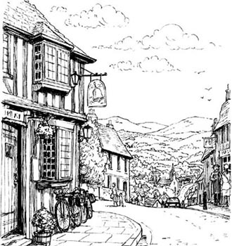
They stayed at the hotel in the village.
JERRY
Yeah. Hey, come on! Let's go out in the sun. Let's see the village. Have a drink. Find some girls.
BRAD
No, you go. I like it here. Here in the room.
JERRY
OK. Let's stay in the room. Hey! There's a television. (Jerry puts the television on but nothing happens.) Hmm.
BRAD
Not working? Oh, forget it.
JERRY
No! You're Brad Davis of Davis Television, the biggest in America. You must have a television! Look, shall I go down and ask Mrs Finch? You stay here. You look tired.
BRAD
Yeah, thanks, Jerry. I am tired.
Jerry goes out. Brad looks at the book about Britain.
BRAD
(Reading from the book) 'In 1760 the hotel was a house. A family called Bannister lived in the house. One day, the nineteen-year-old daughter, Eellen--'
The ghost of Ellen Bannister comes in. She is wearing a dress from 1760.
ELLEN
I was never nineteen. I died at eighteen.
BRAD
Yes, I remember you. Hello, Ellen.
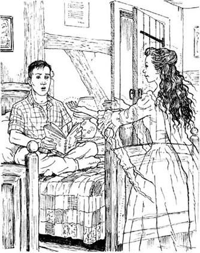
'Hello, Ellen.'
ELLEN
Hello, Matthew. Why does your friend call you Brad? Is that a name?
BRAD
Yes. It's an American name.
ELLEN
But you are Matthew and I'm going to call you Matthew. Always. Oh Matthew. I waited and waited and waited for you. I love you so much. Do you love me?
BRAD
Yes. I think – Yes, I do.
ELLEN
You think! Is that an answer? After all these years? Oh Matthew! Matthew, do you remember everything?
BRAD
No, not everything. I remember our love. And you died, I remember that. I wanted to die too. And again last month, I wanted to die.
ELLEN
Oh Matthew! Don't say that! Oh Matthew, I'm so happy to see you again.
BRAD
Ellen. Can I see you? Can we talk?
ELLEN
Oh yes. I want to talk to you about—
Jerry comes in with Mrs Finch. Ellen runs out.
MRS FINCH
Are you OK, love? You look white.
JERRY
This is not a happy time for Brad.
MRS FINCH
I'm sorry, love. Do you want some dinner? I make the best dinner in the north of England.
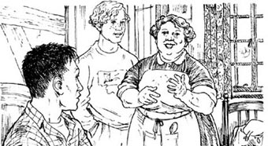
'I make the best dinner in the north of England.'
BRAD
(Smiling) No, thank you.
MRS FINCH
Talk to me later, then. Right, the television. (She hits the television.) It's OK now. Bye-bye, Brad. Bye, Jerry. Have a nice time in our village.
She goes to the door.
BRAD
Mrs Finch! Wait, please. Do you know about the Bannister family?
MRS FINCH
Did you see the ghost? Ellen Bannister?
BRAD
Yes.
JERRY
What? Brad, you saw a ghost? Oh, come on!
MRS FINCH
Oh, Ellen's always here. She likes young men. She's always looking for her boyfriend. Matthew's his name, I think.
BRAD
Mrs Finch, what happened? How did she die? What happened to Matthew?
MRS FINCH
You're interested, love, I can see that. There's an old woman in the village. Her name is Maud Anscombe. She knows about Ellen. You ask Maud. (She goes out.)
JERRY
Brad, this ghost – What did she say?
BRAD
(Not looking at Jerry) She – she didn't speak, Jerry. She said nothing at all.
steal v. (past tense stole) to take things that do not belong to you 偷窃
put on (the television) to switch on or turn on, to make it work 打开
SCENE 2
Brad and Jerry want to know about Ellen
Maud is a very old woman. Her hair is white. Brad and Jerry are sitting at a table with her in her house.
MAUD
Ellen Bannister? A bad, bad girl. When she looked at someone, the next day they were ill.
JERRY
So she was a witch?
MAUD
Yes. She looked at animals too. Then all the cows in the village had no milk in them.
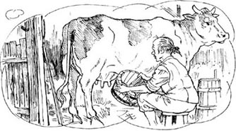
'Then all the cows in the village had no milk in them.'
BRAD
(Angrily) Do – do you know this? How do you know? How can you know?
MAUD
Oh, it's in all the books. Our village is famous because of bad Ellen Bannister.
SCENE 3
Was Ellen a witch?
Brad and Jerry are in Mrs Morgan's village shop. There are two men and three women in the shop, and Mrs Morgan.
MRS MORGAN
Yes? Are you next?
JERRY
Yes. Two cokes please. And two of those sandwiches.
BRAD
I'm not hungry.
JERRY
Man, you must eat. You can't sit in your room all day and wait for a ghost.
Mrs Morgan gets the cokes and the sandwiches.
MRS MORGAN
That's six pounds, please. (Jerry gives her the money.) What ghost's this? Ellen Bannister?
BRAD
(Angrily) Yes!
JERRY
Do you know about Ellen Bannister?
MRS MORGAN
Oh, people in our village had no money then. Of course they stole things. And Ellen Bannister sold them. She only wanted to help.
JERRY
Was she a witch? Some people say that.
MRS MORGAN
A witch? (Laughing) No, of course not. The men loved her. She helped them, you see. The women didn't love her so much. She was beautiful, you see.
WOMAN 1
Her boyfriend was the bad one, that Matthew. It wasn't her.
BRAD
(Drinking his coke) Oh. What did he do?
WOMAN 2
He stole things from rich people. Then she sold them and he took all the money. He took all her money, too. But she loved him.
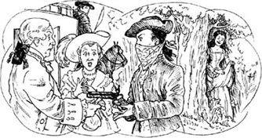
'He stole things from rich people.'
BRAD
Did he love her?
MAN 1
No. He had two or three women.
WOMAN 3
No, he didn't! He loved her. He lived for her.
MAN 2
Who are you talking about? That witch Ellen Bannister? She ate cats for breakfast.
WOMAN 3
(To Brad and Jerry) Oh, don't listen to him.
MRS MORGAN
(Laughing) Don't listen to these people, you boys. What happened to Ellen Bannister? You want to know that? Matthew killed her.
witch n. a woman who uses magic to do bad things 女巫
famous adj. known about by many people in many places 出名的
sell v. (past tense sold) to give something to someone who pays you for it 卖
SCENE 4
Where is Ellen now?
It is night time. Jerry is sitting on the bed. Brad is walking up and down.
BRAD
Seven hours. We waited seven hours. Where is she, Jerry?
JERRY
I said this before. I don't know. Just wait.
BRAD
She isn't coming, because you're here.
JERRY
Brad, I say again. One. I sleep here. This is my room. Two. I am your friend and I am not leaving you like this.
BRAD
Jerry, is this all a big laugh for you?
JERRY
No. Not now. I want to see Ellen, too. I want to help.
BRAD
OK. Thanks, Jerry. Sorry. Hey, here she is.
The ghost of Ellen comes into the room.
BRAD
Ellen, Ellen. It's me. Brad, Matthew.
JERRY
Man, oh man! It's all true!
BRAD
Ellen, please. Tell me, what happened, in 1760?
ELLEN
You must remember!
BRAD
No.
ELLEN
We sold things, you and me. Rich people's things. You stole them, remember?
JERRY
Wow! Brad, you were Robin Hood! Sorry!
ELLEN
The rich people didn't like me. They said bad things about me. 'Ellen Bannister is a witch.' They said that, but it's not true.
BRAD
Of course not.
ELLEN
Then, one day, they came for us. Twenty men.
BRAD
What happened?
ELLEN
We ran away. You found a ship. A ship going to America. You said, 'See you at one-fifteen. At the harbour. We can go away, you and me.'
BRAD
And then what happened, Ellen?
ELLEN
The ship went early. I wasn't there in time. You went on the ship. You didn't wait for me.
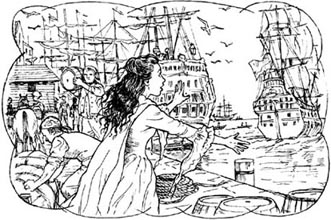
'You didn't wait for me.'
BRAD
Oh no!
ELLEN
When I arrived, there were a lot of ships there. I didn't know the name of our ship. I looked for you. I waited and waited and waited.
BRAD
Ellen! Oh Ellen, I'm sorry.
ELLEN
Then the men came. They put me in prison. I died three months later. And then I came back home. Here. And I waited again. I waited for you.
BRAD
I love you, Ellen.
ELLEN
I love you too, Matthew.
harbour n. a safe place for ships, while they prepare to go to sea 码头
SCENE 5
What is Brad going to do?
It is dark. Brad is standing at the window of the room. Jerry comes in. Brad always has his back to Jerry in this scene.
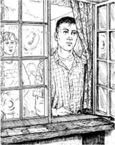
JERRY
Do you want to die? Do you want to go to Ellen?
BRAD
Before today, the answer was 'Yes'. Matthew wanted to die and go to be with Ellen. Do you understand that?
JERRY
Yes.
BRAD
But Matthew is dead and I am Brad now.
JERRY
And what does Brad want?
BRAD
I don't know. I'm thinking. Is there a train from here to London tomorrow?
JERRY
Yes. We can put our bicycles on the train. We can get the next plane back to America. Do you want to do that?
BRAD
I don't know. I'm going to tell you tomorrow.
SCENE 6
In love with a ghost
The next day. Brad and Jerry are in the street. Jerry has two bags. Mrs Finch is there too.
MRS FINCH
You must leave, then? A week early?
JERRY
Yes. I'm sorry.
Mrs Morgan comes past the hotel.
MRS MORGAN
Oh hello. It's the American boys. Are you going home to America?
BRAD
Jerry's going home, Mrs Morgan. I'm staying here, at the hotel. I'm going to live here. Always.
JERRY
Brad, do you want to do this? Think about Davis TV. What are you going to do, here in England?
BRAD
I don't know. But, yes, Davis TV needs a good man. My dad worked for years for Davis TV. But now it has a good man, Jerry. You.
JERRY
Me? Oh! Thank you, Brad.
BRAD
That's OK. I'm happy. I'm in love. She waited for me and now I'm here. I'm never going to leave her again.
恋爱中的幽灵
恋爱中的幽灵
内容简介
布拉德和杰里今年十九岁，他们在英国度假。这段日子布拉德很不开心：他的父亲上个月去世了。布拉德的父亲是戴维斯电视台的迪克·戴维斯，等布拉德回到美国，他就会成为戴维斯电视台的布拉德·戴维斯。炎热的一天，布拉德和杰里待在一家乡村旅馆里，那里发生了一些奇怪的事情……
剧中人物
布拉德·戴维斯——一名十九岁的美国小伙子
杰里·马洛尼——布拉德的朋友
埃伦·班尼斯特的幽灵
芬奇夫人——旅馆工作人员
莫德·安斯科姆——村里的一个老太太
摩根夫人——村里的商店店员
三个村妇和两个村夫
场景说明
第一场：一间宾馆客房，有两个旅行包、一本关于英国的书、一台电视机、一张床和布拉德的一块手表。
第二场：一个房间，有一张桌子和三把椅子。
第三场：商店里，有两瓶可乐、一些三明治和钱。
第四场和第五场：同第一场的房间，有一张床和一台电视机。
第六场：街道上，有两个旅行包。
要为布拉德和杰里准备夏天穿的衬衫，为埃伦准备一件长裙。电视不用开着。
第一场
布拉德见到一个幽灵
布拉德和杰里走进宾馆的房间，把旅行包放下。天气炎热，他们穿着夏衫。布拉德坐在床上。
杰里：
伙计，我想来杯喝的。一早上赶了二十英里路！自行车放在街边没事儿吧？
布拉德：
在这个小村子里？没事！这儿没人偷自行车。
杰里：
你怎么知道？这是你第一次来这儿，第一次来英国。要不我搞错了？
布拉德：
不，你说得对。可是——我记得这个村子。我以前来过这里，杰里。我能感觉到。
杰里：
唉，算了吧！我们在大太阳底下待了五个小时。你该喝点儿凉水了，我的朋友。
布拉德：
这家旅馆1853年开业的，对吗？
杰里：
（他从旅行包里掏出一本介绍英国的书查阅起来。）是的，布拉德。你以前看过这书吧。
布拉德：
不，我没有。嘿，你知道吗？（他看着自己的手表。）一点十五分了。我父亲就是上个月这一天的这个时间去世的。
杰里：
噢，布拉德。我很难过。
布拉德：
不，不，没事。咱们在英格兰待了三周了，我下周就要回纽约了。我将会成为“戴维斯电视台的布拉德·戴维斯”——这是父亲的愿望。
杰里：
是吗？嘿，来吧！咱们出去晒晒太阳，去看看这个村子。喝一杯，找几个姑娘。
布拉德：
不，你去吧。我喜欢这儿，我就待在房间里。
杰里：
好吧，那咱们就待在房间里。嘿！这儿有台电视机。（杰里打开了电视，可没有图像。）嗯。
布拉德：
坏了？唉，别管它了。
杰里：
不行！你可是美国最大的电视台戴维斯电视台的布拉德·戴维斯。你必须有一台电视机！哎，要不要我下楼去问问芬奇夫人？你待在这儿，你看起来很累。
布拉德：
好吧，谢谢你，杰里。我累了。
杰里下场。布拉德看着那本介绍英国的书。
布拉德：
（念书）“1760年，这家旅馆还是一栋住宅。一家姓班尼斯特的人住在这栋房子里。一天，他们十九岁的女儿埃伦——”
埃伦·班尼斯特的幽灵上场。她穿着1760年款式的长裙。
埃伦：
我从未长到十九岁，我十八岁时就死了。
布拉德：
对，我想起你来了。你好，埃伦。
埃伦：
你好，马修。为什么你的朋友管你叫布拉德？那是一个名字吗？
布拉德：
是的，那是个美国名字。
埃伦：
可你是马修，我要管你叫马修。永远叫马修。啊，马修。我一直在等你，等了又等。我那么爱你，你爱我吗？
布拉德：
爱。我想——我爱你。
埃伦：
你还用想！那就是答案吗？这么多年之后？唉，马修！马修，你还记得以前的一切吗？
布拉德：
不，不是所有事都记得。我记得我们俩相爱，还记得你死了，当时我也想死。上个月，我又一次想去死。
埃伦：
噢，马修！别那么说！噢，马修，我很高兴又能见到你。
布拉德：
埃伦，我能看见你吗？咱们能说说话吗？
埃伦：
噢，当然可以。我想给你讲讲—
杰里和芬奇夫人一起进来了。埃伦跑了出去。
芬奇夫人：
你没事吧，亲爱的？你看起来面色苍白。
杰里：
这段日子布拉德不太好过。
芬奇夫人：
我为你担心，亲爱的。你想吃点儿东西吗？我做的饭可是英格兰北部最好吃的。
布拉德：
（微笑着）不了，谢谢您。
芬奇夫人：
那么待会儿再叫我吧。对了，电视。（她拍打着电视机。）现在好了。拜拜，布拉德。拜拜，杰里。祝你们在我们村里玩得开心。
她往门口走去。
布拉德：
芬奇夫人！请等等。你知道班尼斯特家的事吗？
芬奇夫人：
你看到幽灵了？埃伦·班尼斯特？
布拉德：
是的。
杰里：
什么？布拉德，你见到了一个幽灵？啊呀，得了吧！
芬奇夫人：
唉，埃伦总在这儿出现。她喜欢年轻人，她一直在寻找她的男朋友。我想他叫马修。
布拉德：
芬奇夫人，发生了什么事？她是怎么死的？马修怎么了？
芬奇夫人：
你很感兴趣啊，亲爱的，我能看出来。村里有个老太太，她叫莫德·安斯科姆。她知道埃伦的事。你去问问她吧。（下场。）
杰里：
布拉德，这个幽灵——她都说了些什么？
布拉德：
（没有看杰里）她——她没说话，杰里。她什么都没说。
第二场
布拉德和杰里想了解埃伦
莫德是一位年迈的老太太，头发花白。布拉德、杰里和她围坐在她家的桌旁。
莫德：
埃伦·班尼斯特？一个非常非常坏的女孩。她看谁一眼，第二天那个人就会生病。
杰里：
这么说她是个女巫？
莫德：
是的。牲畜也是，给她看过之后，村里所有的奶牛都不产奶了。
布拉德：
（生气地）你——你知道？你怎么知道的？谁告诉你的？
莫德：
啊，所有的书里都是这么写的。我们村子就是因为这个邪恶的埃伦·班尼斯特而出了名。
第三场
埃伦是女巫吗？
布拉德和杰里在摩根夫人的乡村商店里。店里有两个男人、三个女人，还有摩根夫人。
摩根夫人：
你好？你是下一位吗？
杰里：
是的，我要两杯可乐，还要两个那种三明治。
布拉德：
我不饿。
杰里：
伙计，你必须得吃点东西。你不能整天坐在房间里等一个幽灵。
摩根夫人拿来了可乐和三明治。
摩根夫人：
一共是六英镑。（杰里把钱给她。）是谁的幽灵？埃伦·班尼斯特的吗？
布拉德：
（生气地）是的！
杰里：
你知道埃伦·班尼斯特的事儿吗？
摩根夫人：
哦，当时我们村里的人都没有什么钱，他们偷东西也是会有的事，偷来的东西埃伦·班尼斯特负责销赃。她只是想要帮帮忙而已。
杰里：
她是个女巫吗？有人是这么说的。
摩根夫人：
女巫？（哈哈大笑）不，当然不是。男人们都喜欢她。她帮助他们，就这样。女人们不怎么喜欢她，要知道，她很漂亮。
村妇甲：
她的男朋友才是个坏人，那个马修。她不坏。
布拉德：
（喝着可乐）哦，他都干了些什么？
村妇乙：
他偷富人家的东西。然后埃伦把东西卖掉，他拿走了所有的钱。他还把埃伦所有的钱都拿走了。可是埃伦爱他。
布拉德：
他爱埃伦吗？
村夫甲：
不。他有两三个女人呢。
村妇丙：
不，他没有！他爱她。他是为她而生的。
村夫乙：
你们在说谁？那个女巫埃伦·班尼斯特？她早餐吃猫肉的。
村妇丙：
（对布拉德和杰里说）喂，别听他的。
摩根夫人：
（哈哈大笑）你们俩别听这些人的。埃伦·班尼斯特发生了什么事？你们想要知道吗？马修杀了她。
第四场
埃伦现在在哪里？
晚上。杰里坐在床上，布拉德在屋里走来走去。
布拉德：
七个小时，我们等了七个小时了。她在哪儿，杰里？
杰里：
我已经说过了，我不知道。就等等吧。
布拉德：
她不来了，因为你在这儿。
杰里：
布拉德，我再说一遍。第一，我睡在这儿，这是我的房间。第二，我是你的朋友，我不能把你就这么留在这儿。
布拉德：
杰里，这在你看来是个大笑话吗？
杰里：
不，现在还不是。我也想见见埃伦，我想帮帮忙。
布拉德：
好吧。谢谢你，杰里。对不起。嘿，她来了。
埃伦的幽灵进入了房间。
布拉德：
埃伦，埃伦。是我，布拉德，是马修。
杰里：
天啊！这都是真的！
布拉德：
埃伦，求你了。告诉我，1760年的时候发生了什么事？
埃伦：
你一定记得！
布拉德：
不，我不记得。
埃伦：
我们卖东西，你和我，富人的东西。是你偷的，你记得吗？
杰里：
哇！布拉德，你是罗宾汉！抱歉！
埃伦：
富人不喜欢我。他们说我坏话，说：“埃伦·班尼斯特是个女巫。”他们那么说，可那不是真的。
布拉德：
当然不是真的。
埃伦：
后来有一天，他们来找我们了，一共有二十个男人。
布拉德：
发生了什么事？
埃伦：
我们逃跑了。你找到一条船，一条开往美国的船。你说：“一点十五分，码头见。我们就能逃走了，你和我。”
布拉德：
后来发生了什么事，埃伦？
埃伦：
船早开了，我没有及时赶到。你上了船，你没有等我。
布拉德：
啊呀！
埃伦：
我到达时，发现那儿有很多船。我不知道我们那艘船的名字。我四处找你，等了又等。
布拉德：
埃伦！啊，埃伦，我很抱歉。
埃伦：
随后那些人就来了，他们把我投进监狱。三个月后，我就死了。于是我回到了家，就是这儿。我又开始等你出现，我一直在等你。
布拉德：
我爱你，埃伦。
埃伦：
我也爱你，马修。
第五场
布拉德打算怎样？
天黑了，布拉德站在窗前，杰里走了进来。在这一场中，布拉德始终背对着杰里。
杰里：
你想死吗？你想去找埃伦吗？
布拉德：
今天之前，答案是“对”。马修想要死掉，去和埃伦在一起。你能理解吗？
杰里：
能。
布拉德：
可是马修死了，而我现在是布拉德。
杰里：
那布拉德想要做什么？
布拉德：
我不知道，我正在考虑。明天这里有一班去伦敦的火车吗？
杰里：
是的。我们可以把自行车放到火车上，然后乘下一班飞机回美国。你想这么做吗？
布拉德：
我不知道。我明天告诉你吧。
第六场
爱上一个幽灵
第二天。布拉德和杰里在街上，杰里拎着两个旅行包，芬奇夫人也在那儿。
芬奇夫人：
那么，你一定要离开吗？提前一周？
杰里：
是的，很抱歉。
摩根夫人路过旅馆。
摩根夫人：
唉，你们好，两个美国男孩，你们要回美国吗？
布拉德：
杰里要回家了，摩根夫人。我要待在这儿，待在旅馆里。我往后都住这儿了。
杰里：
布拉德，你想这么做吗？想想戴维斯电视台吧。你在英格兰要做些什么？
布拉德：
我不知道。不过，对了，戴维斯电视台需要一个出色的人。我父亲为戴维斯电视台工作多年。而现在，它又有一个出色的人了，杰里，就是你。
杰里：
我？啊！谢谢你，布拉德。
布拉德：
别客气。我很高兴，我坠入爱河了。她一直在等我，而现在我来到了这里，我再也不会离开她了。
ACTIVITIES: Before Reading
ACTIVITIES
Before Reading
1 There are ghosts in all three of these plays. Think about these questions.
1) Do you believe in ghosts? Why, or why not?
2) Why are some people afraid of ghosts?
3) Do you know any stories or films about ghosts?
2 Read the information on the first page of the book and the back cover. How much do you know now about the people in the plays? Choose true (T) or false (F).
1) Richard sees the ghost of his dead brother. T/F
2) At first, Jerry doesn't believe in ghosts. T/F
3) Brad and Jerry come from England. T/F
4) Jenny meets the ghost of her dead husband. T/F
3 The titles of the three plays are: One Ghost for the Day, One Ghost for the Night; Sleep Now, My Darling; and A Ghost in Love. Which places, things, and people belong to each play? Can you guess?
actress, airport, bicycle, hotel, judge, knife, prison, telephone, witch
ACTIVITIES: While Reading
ACTIVITIES
While Reading
One Ghost for the Day, One Ghost for the Night
1 Read Scene 1, then circle the correct words in these sentences.
1) Mary can hear something / nothing outside.
2) Richard is afraid / happy when he sees Heston.
3) Heston is pleased / angry with Richard.
4) Last year, Keech / Heston killed a man.
5) Keech now has Richard's / Heston's son's money.
2 Read Scenes 2 and 3, and complete the summary.
In the court, Reynolds ______ Keech about Tom's money. Keech ______ the money to everyone. Then Richard _____ the court about the ghost, and everyone _____ at him. But then everyone _____ the dead man's voice. Keech killed a man and _____ his money, Heston said. Keech _____ away from the court. Later, he _____ Richard.
3 Read Scene 4, and then answer these questions.
1) Where is Keech, and why is he afraid?
2) Why can't Keech hit Richard?
3) Who is going to be with Keech every night?
Sleep Now, My Darling
1 Read Scene 1. Choose the best question-word for these questions, and then answer them.
What / Where / Who / Why
1) _____ is Gilbert going today?
2) _____ made the bread?
3) _____ was the name of Gilbert's best film?
4) _____ must Gilbert go to America?
5) _____ does Jenny want to do?
2 Read Scenes 2 and 3. Who said these words, and to whom?
1) 'I know you. I know your face.'
2) 'But forget about me. I want to talk about you.'
3) 'I was happy when I was an actress.'
4) 'I write books now, you know.'
5) 'Smile. Be happy.'
6) 'She's white in the face!'
7) 'We phoned you at home. There was no answer.'
3 Read Scene 4. Are these sentences true (T) or false (F)?
1) Gilbert died when the plane crashed.
2) Jenny's father was at the airport.
3) Laura was at the airport.
4) Laura is a writer.
5) Jenny is going to be an actress again.
A Ghost in Love
1 Read Scene 1, then match the people with the information.
Ellen / Matthew / Jerry / Mrs Finch / Brad / Brad's father
1) _____ and _____ arrive in a village in England.
2) _____ died one month ago.
3) Brad sees the ghost of _____ in his hotel room.
4) A long time ago, _____ was Ellen's boyfriend.
5) _____ works at the hotel.
2 Read Scenes 2 and 3. What do people say about Ellen and Matthew? Match these halves of sentences.
| Matthew stole things, | they were ill the next day. |
| The men loved Ellen, | and Ellen sold them. |
| Matthew took all Ellen's money, | but the women didn't. |
| When Ellen looked at people, | but she loved him. |
3 Read Scene 4. Correct the mistakes in this summary.
Ten men came for Matthew and Ellen, but they ran away.
Matthew went to France. Ellen wasn't with him because the ship were later. She died at home.
4 Before you read Scenes 5 and 6, can you guess what Brad is going to do?
1) He is going back to America.
2) He is staying in England.
ACTIVITIES: After Reading
ACTIVITIES
After Reading
1 Heston wants Richard to get his son's money (see SCENE 1 of One Ghose for the Day, One Ghost for the Night). Put their conversation in the right order, and write in the speakers' names. Richard speaks first (number 6).
1) _____ 'You can take Keech to court. Then you can tell the judge about my son's money.'
2) _____ 'What! A ghost! In court?'
3) _____ 'You must tell everyone about Keech.'
4) _____ 'But Keech is going to be angry! I'm afraid of him!'
5) _____ 'No! Do it tomorrow! Go to court and get my boy's money. Do it! Or do you want to go mad?'
6) _____ 'What must I do?'
7) _____ 'Well, I need to think. Maybe next week...'
8) _____ 'That's easy. Tell the judge to call me. I'm going to come to the court!'
9) _____ 'Don't worry. The judge is going to send Keech to prison. Keech is going to die there. He can't hurt you.'
10) _____ 'I can say "Keech took the money." But how can I show that it's true?'
11) _____ 'Yes. I'm going to tell the court about Keech – and his money! I know some bad things about him!'
12) _____ 'How can I do that?'
2 This is a page from Jenny's diary, on the day that Gilbert leaves (see SCENE 1 of Sleep Now, My Darling). Use these words to fill in the gaps.
actress, because, director, film, garden, next, together, unhappy, went, works
Gilbert _____ to America today. He's going to make a _____. He's a good _____, and he often _____ in America. I can't go with him, _____ I have work to do in the house and _____. I feel very _____ because I'm at home all the time. Perhaps next year Gilbert and I can go to America _____. Perhaps I can be in his _____ film. I'm a good _____, I think.
3 Here are some other titles for the plays. Can you match the titles with the plays? Which title do you like best for each play, and why?
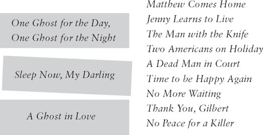
4 Perhaps this is what some of the people in A Ghost in Love are thinking. Who are the people, and what is happening in the play at the moment?
Jerry / Mrs Finch / Mrs Morgan / Brad / Ellen
1) 'What a lovely old room! Wait a minute. I remember this room. And this wasn't a hotel, it was a house. A girl lived here, and I loved her.'
2) 'Oh, that poor boy! He looks white. Perhaps he's tired? Or hungry? He needs one of my dinners!'
3) 'Why isn't Matthew here? It's a quarter past one. And that ship? Where is it going? Is Matthew in it?'
4) 'Why does everyone say these terrible things about Ellen Bannister? She wasn't a bad girl. Those two American boys are very interested in her!'
5) 'So it's true! There really is a ghost! It's the ghost of a young girl, and she's talking to Brad.'
5 Which play did you like best, and which did you like least? Can you explain why? Write a short review of one of the plays. Use these words to help you.
I like / don't like this play because __________.
It is a good play because __________.
My favourite character is _____ because __________.
It's exciting when __________.
6 Find words from the three plays to complete this crossword. Then find the hidden word.
1) Some people say Ellen was a _____. (5)
2) Ellen waited for Matthew at the _____. (7)
3) Gilbert's plane _____ into the sea. (7)
4) Two ghosts visited Keech when he was in _____. (6)
5) The _____ at the café was friendly to Henry. (8)
6) We get milk from _____. (4)
7) Keech killed a rich man and _____ his money. (5)
8) At Keech's trial, the people can't see Heston but they can hear his _____. (5)
9) Jenny heard some bad news when she was at the _____. (7)
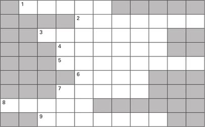
The hidden word is _____________.
封底